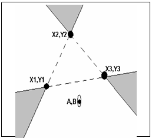

Една част от опасно пристанище е показана на фигурата, като най-опасните за корабоплаването зони са защриховани. Както се вижда от фигурата тези зони са образувани от пресичането на три прави – всяка със всяка. Три фара, които трябва да обезпечат безопасността на плаващите в пристанището кораби са построени в точките обозначени с черно (пресечните точки на трите прави). Задачата е по зададена позиция на кораб в пристанището да се определи дали коръбът е:
А) в опасна позиция (т.е. намира се във вътрешността на опасните зони);
Б) в почти-опасна позиция (т.е. намира се по границите на опасните зони, включително местата на фаровете);
В) в безопасна позиция (т.е. нито едно от предходните).
Напишете програма, която решава задачата.
На първия ред на стандартния вход ще бъде зададен броят T на тестовите примери. За всеки тестов пример на един ред ще бъдат зададени координатите X1, Y1, X2, Y2, X3, Y3 на трите фара (взети по посока на часовниковата стрелка) и A,B на кораба. Всички координати са числа с десетична точка в интервала [-100.0,100.0].
За всеки тестов пример програмата трябва да изведе на отделен ред на стандартния изход:
D – ако корабът е в опасна позиция,
A – ако корабът е в почти-опасна позиция
или S – ако корабът е в безопасна позициа.
Пример
| Вход | Изход |
3
0. 0. 0. 10. 10. 0. -0.5 –0.5
0. 0. 0. 10. 10. 0. 0. –0.5
0. 0. 0. 10. 10. 0. 1.0 1.5
|
D A S |
Задача 12b.